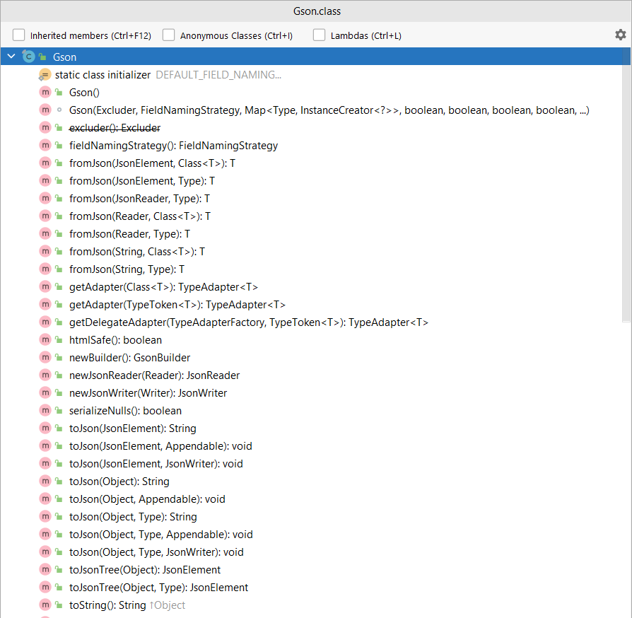
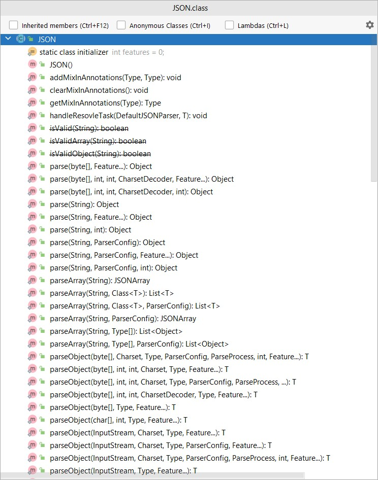
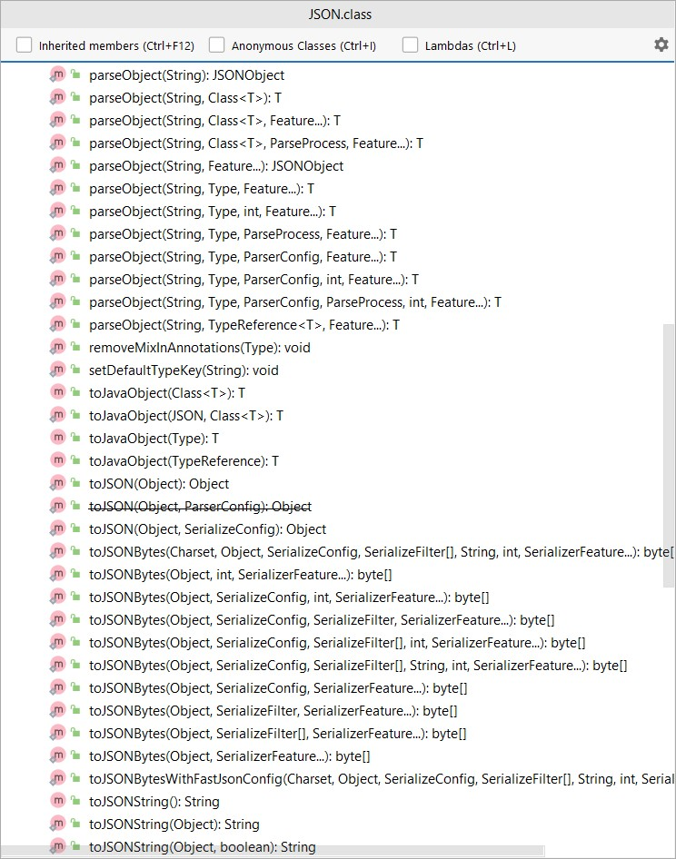
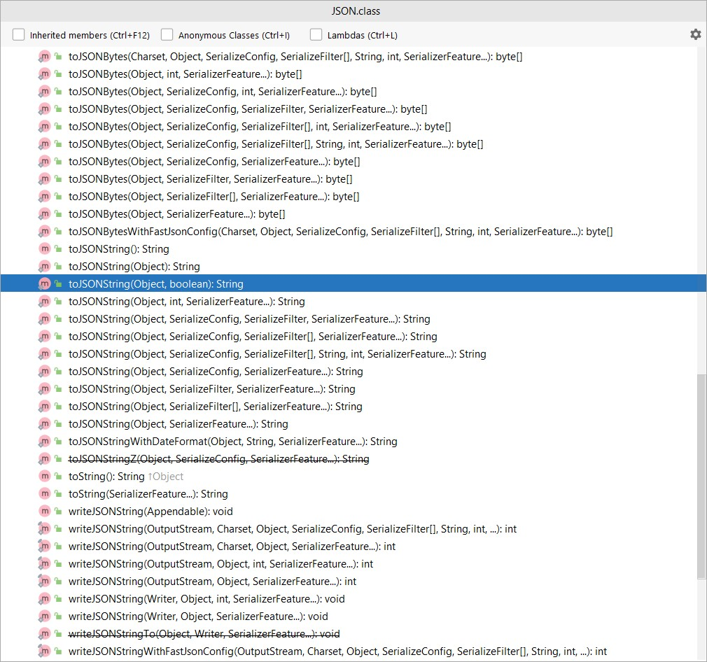

Java泛型与Json反序列化
本文最后更新于：2022年11月8日 下午
Java的JSON库有很多，本文分析google的Gson和alibaba的fastjson，在Java泛型场景反序列化的一些有意思的行为。考虑下面的json字符串：
[
"2147483648",
"2147483647"
]
用fastjson在不指定类型的情况下解析，下面的代码输出啥：
JSON.parseArray(s).forEach(o -> { System.out.println(o.getClass()); });
答案是：
class java.lang.Long
class java.lang.Integer
是不是感觉有点儿奇怪，两个都是数字啊，居然输出了不同的类型，原因我们下面细讲。再看看Gson， 用Gson解析并且不指定泛型类型的话，下面的代码输出啥：
new Gson().fromJson(s, List.class).forEach(o -> { System.out.println(o.getClass()); });
答案是：
class java.lang.Double
class java.lang.Double
这次两个都是Double类型，明明是整数啊，为啥到Gson这里变成Double了？
我们试了两个Json库，解析相同的json字符串，得到全然不同的结果。如果在实际使用的时候，用这种方式反序列化JSON，很容易出现BUG，而且是运行时才可能出现，这种问题一旦出现往往很难排查。因此为了保证泛型类型Json反序列化的正确性，一定要明确指定泛型的类型。下面我们先看看正确的解析应该怎么写，再深度探讨一下内部的原理。
正确的泛型Json反序列化
fastjson和Gson都提供了泛型类型的反序列化方案，先来看看fastjson，对于上面的case，正确的反序列化代码如下：
JSON.parseObject(s, new TypeReference<List<Long>>(){})
.forEach(o -> { System.out.println(o.getClass()); });
创建一个确定泛型类型的TypeReference子类（这里是匿名内部类），将这个子类传递给fastjson以帮助fastjson在运行时获得泛型的具体类型信息，从而实现泛型正确反序列化。Gson的方案与fastjson相同，或者应该反过来说fastjson的方案与Gson相同。大家感兴趣的话可以看看fastjson的TypeReference和Gson的TypeToken代码，基本上fastjson就是抄袭Gson，连注释都抄了……。Gson指定泛型类型的反序列化方法如下，也是创建一个确定泛型类型的匿名子类：
new Gson().<List<Long>>fromJson(s, new TypeToken<List<Long>>(){}.getType())
.forEach(o -> { System.out.println(o.getClass()); });
由于fastjson的方案是来自Gson，以下只讨论Gson的泛型反序列化原理。为什么泛型的反序列化显得这么麻烦呢，非要通过子类化的方式，不能直接告诉Gson泛型的类型吗？是的，Java是真的做不到，其实理由很简单，泛型类既然是泛型，意味着就不应该带有具体泛型类型的信息，因此泛型类的字节码本身就不应该也无法保存泛型类型，但是子类如果继承一个明确泛型类型的父类（父类是一个泛型类型，Gson里面就是TypeToken），子类必须保存父类的明确类型信息，通过Class类的getGenericSuperclass方法能够获得父类类型信息，该类型信息包含了父类具体的泛型类型信息。这个方法帮助Java的泛型体系完整化了，是非常重要的一个方法。
类库设计分析
面对相同的设计问题，fastjson与Gson在很多点上的选择不同，借此机会可以一窥类库设计的思想，让我们一一来看。
是静态方法还是实例化
使用Gson之前，必须进行实例化，Gson提供了两种方式：一种是无参数构造器，一种是通过GsonBuilder，后者能够进行更多的定制，但无论是哪种方法，都需要实例化一个Gson对象。但是Fastjson使用之前是不需要实例化的，直接使用JSON类的静态方法即可实现json序列化和反序列化。这一点上来讲，Fastjson比较方便，虽然Gson是线程安全的，可以用static变量来声明一个Gson实例（饿汉模式的单例）然后全局使用，但是还是比Fastjson多了一步。但是Gson这么做的好处是如果序列化（反序列化）的定制比较多，可以在初始化的时候完成复杂的扩展定制，使用的时候依然保持简单，Fastjson就需要每次都传递额外的参数来实现。总体来讲各有优化，Gson是线程安全的，大部分场景都是定义全局的静态单例，用起来跟Fastjson差不多。Gson在这里的选择倾向于希望对外的接口保持一致和简单，即无论怎么定制逻辑，Json的序列化和反序列化就那么几个方法，内部逻辑可以定制，但是使用接口不用改变。
数字的默认类型
对于数字类型，如果没有明确指定类型，Gson默认都解析成Double类型，而Fastjson会根据数字的不同，解析成Long、Integer或者BigDecimal。我们在生产中用Fastjson就遇到这种问题：由于集合没有指定泛型类型，反序列化的时候，不同大小的数字被反序列化成了不同的类型，导致业务逻辑出错。这种未制定类型情况下，感觉Gson的处理更合适一些，既然未指定类型，对外的默认类型始终是Double，接口对外的心智更稳定。
集合类型反序列化
对于列表类型的反序列化，Fastjson提供了parseArray系列方法，这样很多情况下可以避免使用TypeReference，代码写起来更简单。但是Gson就没有这种方法，如果需要解析列表，必须使用TypeToken<List<Xxx>>，并没有为列表设置特殊的方法，这里依然能看到 Gson希望对外的接口保持一致和简单 ，即便牺牲一点儿方便性。
泛型反序列化
为了解析泛型，Gson和Fastjson都提供了类似的机制（Gson使用TypeToken承载类型，而Fastjson使用TypeReference承载类型），利用子类继承确定泛型父类的方式，获得类型，区别是Gson的接口只接受Type类型的参数，不接受TypeToken参数，这是因为Type是JDK的自带类型，而TypeToken是Gson额外引入的，这种设计的效果是Gson的接口非常简单。Fastjson的接口可以支持Type参数，也支持TypeReference参数。
Gson和Fastjson的对外方法对比
说了这么多，下面两张图，对比一下Fastjson对外同的公共方法数量和Gson提供的公共方法数量，有比较直观的感觉：

Gson对外接口-数量明显更少



FastJson对外接口-数量明显非常多
小结
整体上能明显看出来fastjson更多是长出来的，接口多而全，应该是不断有人提需求不断实现的结果，而Gson是设计出来的，接口的一致性很强，高内聚低耦合，有些时候宁愿牺牲接口的便利性，也要保证接口对外的一致性、简单和概念完整，从设计上我是崇尚Gson的设计理念的，但实际的开发过程更容易演变成fastjson的模式，在中国程序员的地位真的不够高。